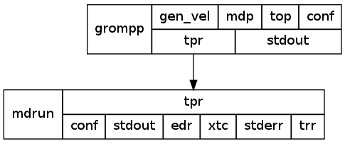

Introduction
What is Copernicus?
Copernicus is a system that aims to take the scope of computer simulations from the level of individual simulation runs to one focused on obtaining results by allowing the user to specify these, rather than a detailed prescription of how to obtain them. It is then up to the Copernicus run-time system to break these desired end-results up into specific tasks and to run these tasks as efficiently as possible on the available computational resources.
Technically, Copernicus is a platform for running multi-level sampling tasks; in the field of molecular simulations, sampling algorithms such as Markov State Modeling and free energy perturbation methods rely on the results of individual simulations as samples to be processed by the higher level algorithm.
How does Copernicus work?
When running, Copernicus is a network of servers; you as a user start servers, connect to these servers through clients (right now, that's the command line server cpcc), and present the servers with 'workers': special clients that do computational work.
Computational tasks are divided into projects that can each host a complex set of simulations. Each project belongs to a server and its contents can only be accessed by accessing that server with a client.
Dataflow Network
Projects consist of functions: a function can be a high-level object like a Markov State Modeling-based adaptive sampling run, or a lower-level object such as an individual mdrun simulation or a simple addition of two real numbers.
Functions have pre-defined inputs and outputs: for example, the msm function has inputs for MSM-specific settings such as the number of microstates, and outputs such as the set of macrostate weights. Outputs of active functions can be connected to inputs of other functions; whenever a active function has all of its required inputs, or whenever an input changes, the function gets called.
As outputs and inputs of functions can be connected to each other, they define networks that are the execution model of Copernicus: internally, all non-trivial functions are themselves dataflow networks. This has the advantage that the internal state of all projects can be inspected while running, and that parts of the network can be executed in parallel.
Server
At least one server nees to run to start executing projects: the server that hosts the project. Other servers can be added to serve as gateways for communication to the workers or host other projects (possibly by other users).
Servers are started and configured with the cpc-server command. Initial configuration can be done with cpc-server setup <dirname>, and the server is started (as a background process) with cpc-server start.
All Copernicus communication happens through encrypted connections, where both sides need to trust each other. The cpc-server command has a set of commands to request and establish trust between servers.
Worker
Workers execute commands in the command queue. As the workers connect to a server, they inform it of which executables are installed; this allows a server to construct a workload based on the worker's capabilities. Executables are descriptions of how to execute a command; possibly in combination with an actual binary executable. Example executables can be found in examples/executables.
Client
The only available client at the moment is the command-line client cpcc. It can be used to start projects, inspect and manipulate running projects, and inspect command queues.
Throughout the documentation we might sometimes use the symbols below to represent servers clients and workers
Getting started
Downloading and Installing
See the installation manual for detailed instructions on how to install Copernicus from a packaged version, or from the git repository. Once installed, you should be able to run cpcc, cpc-server, and cpc-worker.
server setup
To set up a server, it must generate an SSL keypair, and set some basic configurations. To start with this, make sure you've set the COPERNICUS_HOME environment variable so Copernicus can find itself. Then issue the command
cpc-server help
to check whether you can access the server. If that is successful, you should see something like
Usage: cpc-server start [-d]
cpc-server config-list
cpc-server config param value
cpc-server setup default-project-directory
cpc-server create-connection-bundle
Common options:
cpc-server [-c confdir]
Which means that you can run the server command cpc-server. Verify the same for cpcc and cpc-worker. Now set up the server with
cpc-server setup <data-directory>
where <data-directory> is the name of a directory where Copernicus can store run data (such as the output of simulations); typically, this is is something like ~/copernicus, or /data/copernicus if /data points to a writable volume. The output should look like this:
Generating RSA private key, 2048 bit long modulus
...............+++
.....................................+++
e is 65537 (0x10001)
writing RSA key
Signature ok
subject=/CN=debever2.local/ST=test/C=SE/emailAddress=test@test.com/O=copernicus
Getting Private key
Generating RSA private key, 2048 bit long modulus
......................+++
.............................................................+++
e is 65537 (0x10001)
writing RSA key
Using configuration from /Users/sander/.copernicus/debever2.local/ca/caconf
Check that the request matches the signature
Signature ok
The Subject's Distinguished Name is as follows
commonName :T61STRING:'debever2.local_server_1334835570'
stateOrProvinceName :PRINTABLE:'test'
countryName :PRINTABLE:'SE'
emailAddress :IA5STRING:'test@test.com'
organizationName :PRINTABLE:'copernicus'
Certificate is to be certified until Apr 19 11:39:30 2013 GMT (365 days)
Sign the certificate? [y/n]:
1 out of 1 certificate requests certified, commit? [y/n]Write out database with 1 new entries
Data Base Updated
which tells you that a 2048-bit RSA key is being generated for encrypted communication; for technical reasons, it is hard to make this output more meaningful without suppressing any potential error messages that may occur. The server is now ready to run, but we need to set up a client to talk to it.
First, we start the server with
cpc-server start
which should reply with Starting server.. and return the prompt. The server is now running in the background.
Client configuration
Clients (cpcc and cpc-worker) need a connection bundle to connect to the server. This is a file, typically named client.cnx that contains a signed key that can be used to connect to the server, together with the server's address. To ceate a connection bundle, issue the command
cpc-server create-connection-bundle > client.cnx
which outputs a file client.cnx, toghether with output:
Generating RSA private key, 2048 bit long modulus
.............+++
....+++
e is 65537 (0x10001)
writing RSA key
Using configuration from /Users/sander/.copernicus/debever2.local/ca/caconf
Check that the request matches the signature
Signature ok
The Subject's Distinguished Name is as follows
commonName :T61STRING:'worker_debever2.local_1334835845'
stateOrProvinceName :PRINTABLE:'test'
countryName :PRINTABLE:'SE'
emailAddress :IA5STRING:'test@test.com'
organizationName :PRINTABLE:'copernicus'
Certificate is to be certified until Apr 19 11:44:05 2013 GMT (365 days)
Sign the certificate? [y/n]:
1 out of 1 certificate requests certified, commit? [y/n]Write out database with 1 new entries
Data Base Updated
The connection bundle file can now be used to connect to a server, with a command such as
cpcc -c client.cnx projects
Which lists the currently running projects (none):
Projects:
If the connection bundle is not the right one, it will give an error message:
KeyError: 'private_key'
The connection bundle can be installed by copying it into your ~/.copernicus directory in your home directory (if you set up the server in your account, this directory should already exist, and you can do
cp client.cnx ~/.copernicus/client.cnx
which allows you to do
cpcc projects
whithout specifying the connection bundle.
Running a project
To get a high level understanding of how to use copernicus, we'll first go through a simple example
where we start a copernicus server and worker on our local machine. We'll then submit a project to it and run it.
In later sections, we'll go through parts more detailed
- If you haven't already started a Copernicus server, start one with
cpc-server start
- We will now set up a project on our copernicus server.
The script
examples/mdrun-test/rungmxtest
is a simple script that sets up a project that will simulate water
(note that you will need to run this script from $COPERNICUS_HOME).
This example script executes several commands.
- It initates a project.
- It uploads a project definition containing the dataflow network this project uses
- It uploads the three input files necessary for this project
- Finally it will activate the project. Upon project activation the server will start generating commands that can be executed by workers.
After running the script you will see output similar to:
Project mdrun_test created
Imported module gromacs
Added instance 'grompp' of function gromacs::grompp
Added instance 'mdrun' of function gromacs::mdrun
Connected grompp:out.tpr to mdrun:in.tpr
Found item: Set type=file, value mdrun_test/_inputs/0000/conf.gro
Found item: Set type=file, value mdrun_test/_inputs/0001/grompp.mdp
Found item: Set type=file, value mdrun_test/_inputs/0002/topol.top
Project mdrun_test activated.
- At this point the server should have a project named test
and it should have generated a command in the queue. The structure of the project is

so the tpr output of the grompp function is fed into the tpr input of the mdrun function. You can make this graph with cpcc graph
and processing the output with graphviz (the dot tool).
-
Execute the command
cpcc p
You should see this:
Projects:
mdrun_test
To see what's in the command queue we can now run
cpcc q
The output should look like:
Queue:
task mdrun.1: gromacs/mdrun in mdrun_test/mdrun/_persistence/run_001
- Now we'll start up a worker. Once the worker starts up it will connect to the server and ask for work. The server will then send the
generated command to the worker.
To start up a worker with 4 cores on a single machine, run the command
cpc-worker smp -n 4
As soon as the worker starts up the worker will receive a command from the server to execute. You should see:
Available executables for platform smp:
gromacs/mdrun 4.5.3
INFO, cpc.worker: Got 1 commands.
INFO, cpc.worker: cmd ID=72ef60f6ef923d5e0d74b7f81d3255c2f59b2c7e
It will take about 10-30 seconds for the worker finishes it work after that you should see an output like
INFO, cpc.worker: Command id 72ef60f6ef923d5e0d74b7f81d3255c2f59b2c7e finished
INFO, cpc.worker: Got 0 commands.
INFO, cpc.worker: Have free resources. Waiting 30 seconds
The first line says that the worker has finished executing the command(s). The subsequent lines say that the worker has asked for a new command to exeute, but received nothing
If you run cpcc q
again, you will see that the queue is empty.
-
At this stage we can take a look at the output the project has generated.
To see what outputs the mdrun function generates we can run the command
cpcc list mdrun
The corresponding output will look like the below
Instance/network 'mdrun':
State: active
Inputs:
tpr
Outputs:
conf
stdout
edr
xtc
stderr
trr
Subnet function instances:
and we can get the output configuration with the command
cpcc get-file mdrun:out.conf out.gro
Similarly, we can get the stderr (which is where most output goes in mdrun) with
cpcc get-file mdrun:out.stderr stderr
Running a Markov state modelling project
If the previous project (mdrun_test) ran successfully, and all the prerequisites for msmbuilder are met (it should be installed so that it can be found with import msmbuilder), we can start running an MSM project. There is an example MSM project as a script and a set of input files in
examples/msm-test
with a script
examples/msm-test/runtest
that starts a project that generates adaptive sampling runs of the alanine dipeptide in water. After running the script, there will be a function instance
msm that contains the following inputs and outputs:
Instance/network 'msm':
State: active
Inputs:
conf_0
conf_1
conf_2
conf_3
conf_5
conf_4
conf_6
conf_7
conf_8
conf_9
mdp
top
ndx
include
reference
grpname
time_step
nstep
nstxtcout
recluster
num_sim
num_states
Outputs:
log
err
msm_stdout
msm_stderr
macrostate_conf_0
macrostate_conf_1
macrostate_conf_2
macrostate_conf_3
macrostate_conf_4
macrostate_conf_5
macrostate_conf_6
macrostate_conf_7
macrostate_conf_8
macrostate_conf_9
transition_counts
msm_macro_stdout
timescales
maxstate
msm_macro_stderr
weights
Explanations for the meanings of these inputs and outputs can be found with
cpcc info gromacs::msm::msm
Here
gromacs::msm::msm is the full name of the Markov State Modeling function, with double colons (
::) separating module names.
The alanine dipeptide system is small, so the maximum number of cores each simulation should use is around 4. Workers can be limited to run jobs of that size by, for example
./cpcc-worker smp -s 4 -n 24
which starts a 24-core worker (be careful on machines that don't have that many cores!) but limits the size of each job to 4 cores. With 6 workers, the first generation of clustering should start in approximately 10 minutes on a modern machine. The macrostates can then be inspected with
./cpcc get-file msm:out.macrostate_conf_0 macrostate_0.gro
./cpcc get-file msm:out.macrostate_conf_1 macrostate_1.gro
...
./cpcc get-file msm:out.weights weights.out
which gets some of the macrostate configurations and a file with the statistical weights associated with the first 10 macrostates.
Starting up a small copernicus network
In this section we will give a quick overview of how a copernicus network can be set up. A copernicus network consists of project servers and workers, and workers always communicate with one project server.
Project servers can connect to each other to form a network.
This allows project servers to utilize workers connected to other servers: if a worker connects to a server, it will be given a workload from that server unless there are no available jobs. If that is the case, the server delegates the worker's workload request to other servers in the network, in a prioritized order.
In this example we will start 2 copernicus servers and connect them: for this we need access to 2 different machines with copernicus installed.
On each machine we will run one server and one worker. The command line client tool will be to on each separate machine to connect to the server running on that same machine.
We now have a copernicus network consisting of two servers, with one worker connected to each server.
With this server network, workers can be used by other servers in the network. Whenever a server has no work in its queue it will ask its neighbouring servers for work that it can send to the worker.
Configuration
All the three applications: the server
cpc-server, the worker
cpc-worker and the client
cpcc, have their own configuration files.
Location of configuration files
By default configuration files will be located in
~/.copernicus/<HOSTNAME>
We will refer to this path as
<CONFIG_HOME> in the rest of the user guide
Server Configuration
Command line Client tool configuration
Worker configuration
Multi-user setup
Projects
Servers
The server is the backbone of copernicus: it is responsible for managing a project and splitting it up into smaller tasks for the workers to process and postprocess returned. It is also an access point for clients or a conduit in the server overlay network.
Configuration
To list available configuration parameters run the command
cpc-server config-list
. This lets you see a list of all available configuration parameters.
To see the configuration parameters and their respective values run
cpc-server config-values
To change change a value you can run the command
cpc-server config <param> <value>
For example, to change the
https port the server listens on to 11111, you could run
cpc-server config server_https_port 11111
(by default, the
https port is 13807)
Connecting copernicus servers
Copernicus servers can connect to each other. There are two reasons to do this: a server can act as a distribution point for workloads: once a server has no more commands to send to a worker it will ask its connected nodes if they have any commands that need processing. Also, a server can act as a conduit for network traffic: if a cluster's compute nodes are not directly accessible to the outside world, but its head node is, a server on the head node will allow workers on the compute nodes to connect to servers running outside the cluster.
To set up a connection between 2 nodes we need to follow the following steps.
- Send a request to the node we want to connect to. This is done with the commend
cpc-server add-node
-
The server that received the connection request has to grant the connection request.
To see what nodes have requested connection can be used, give the command
cpc-server list-node-requests
To grant a request we use the command cpc-server trust
-
Once a connection has been established we can run the command
cpc-server list-nodes to see what nodes
that the server is connected to.
Network Topology
As you start to connect more copernicus servers together you might want to have an easy overview of the network topology. This can be achieved with
the command
cpcc network-topology
Worker delegation
When a worker asks for work and the server has no more commands in its queue, it will ask its connected servers if they have any work in their respective queues. This is called worker delegation.
Worker delegation not only works with the nearest connected servers, the connected servers can further delegate to their neighbouring servers, if they have no work.
Each connected server of a server has a different priority. When worker request is delegated, the server delegates first to the node with the highest priority (here, priority is a number greate than or equal to 0, and 0 means highest priority).
The priority can be checked with the cpc-server list-nodes command.
The number next to the node determines the priority.
To change the priority of a node we can run the command cpc-server change-node-priority.
For example, if we have a server with the nodes:
> cpc-server list-nodes
Connected nodes:
0 mango.fruits.net:13807
1 banana.fruits.net:13807
2 melon.fruits.net:13807
3 kiwi.fruits.net:13807
(the nodes are listed with their priority number, the host name, and the listening
https port number). Suppose we would like to reorder priorities so that
kiwi is prioritised before
melon, we run
> cpc-server change-node priority 2 kiwi.fruits.net 13807
Connected nodes:
0 mango.fruits.net:13807
1 banana.fruits.net:13807
2 kiwi.fruits.net:13807
3 melon.fruits.net:13807
To simply define a node as the one with the highest priority, we set the priority to 0. If we'd like to give it the lowest priority, any number greater than 3 would work.
Server logs
If a function produces an error, it can be obtained with
cpcc ls <function-instance>
The server also maintains logs, that can be checked for debugging purposes. These logs are located in
<CONFIG_HOME>/server/log
The two existing log files are
error.log and
server.log
The easisest way to read these logs is to use
tail: for example
tail -f server.log
Security
All communication between servers is done through securely SSL. This is the reason that trust relationships must be established explicitly through
cpcc add-node and
cpcc trust-all.
Workers
Workers are started with the command cpc-worker <workertype> <worker-args>, where <workertype> stands for the worker type. Currently supported worker types are
smp for single-node workers. Takes the arguments -n for the number of cores to use, and -s for the individual command size.mpi for MPI workers. Takes the arguments -n for the number of cores to use or -hf hostfile to specify a file with hostnames, and -s for the individual command size. The location of the mpirun executable can be specified through the MPIRUN environment variable.cray for Cray XT/XE workers. Takes the arguments -n for the number of cores to use and -s for the individual command size.
Configuration
To list available configuration parameters run the command
cpc-worker config-list
This gives a list of all available configuration parameters.
To see the configuration parameters and their respective values, run
cpc-worker config-values
To change change a value, run the command
cpc-worker config <param> <value>
For example to change the https port the worker connects to 11111, run
cpc-worker config client_https_port 11111
The command line client tool
The copernicus client allows you to connect to a server and issue commands. There are serveral types of commands:
- Project-related commands
cpcc projects|p- List the server's projects.
cpcc start <projectname>- Start a new project and set it to be the default project.
cpcc activate <projectname>- Activate all function instances in a project.
cpcc rm|remove <projectname>- Stop and remove a project.
cpcc set-default <projectname>- Set a default project.
cpcc upload [-p <projectname>] upload.xml- Upload a project definition file.
cpcc ls|list [-p <projectname>] [item]- List information about a named function instance or function input/output record, or the whole network.
cpcc info [-p <projectname>] function_name|module_name|type_name- Giva a description of a function, a module or a type.
cpcc get [-p projectname] inst:in|out.ioname- Get a named function input/output record's value.
cpcc get-file [-p projectname] inst:in|out.ioname filename- Get and save a named function input/output record's file.
cpcc set [-p projectname] inst:in.ioname value- Set a named function input record's value.
cpcc set-file [-p projectname] inst:in.ioname filename- Upload a named function input record's file value.
cpcc import [-p projectname] modulename- Import a library into a project.
cpcc instance [-p projectname] function_name name- Create a function instance in a project.
cpcc connect [-p projectname] inst:out.item inst:in.item- Connect two function instance's function input/output items.
-
Server state queries and commands
cpcc queue|q- List a server's job queue.
cpcc running|r - List a server's running jobs.
cpcc heartbeats|h - List a server's active heartbeat items from workers.
cpcc worker-failed workerID- Force the server to consider a worker as failed.
cpcc command-failed commandID- Force the server to consider a command as failed.
cpcc stop- Stop the server.
- Client setup commands
cpcc setup [name]- Initialize a client's setup.
cpcc trust-server host [http_port]- Trust a specific server's keys.
cpcc config-list- List the client configuration items.
cpcc config-values- List the client configuration items and their values.
cpcc config param value- Change a client configuration item.
The Copernicus client has commands to inspect the active network: cpcc list and cpcc get, and commands to manipulate it: cpcc set, cpcc instance and cpcc connect,to set values, create a function instance and connect instance I/O.
All current projects can be listed with cpcc p. The command queue can be queried with cpcc q, while a running list of commands can be obtained with cpcc r, and a list of heartbeat items with cpcc h.
To list available configuration parameters run the command
cpcc config-list
. This lets you see a list of all available configuration parameters. To see the configuration parameters and their respective values run
cpcc config-values
To change change a value you can run the command
cpcc config <param> <value>